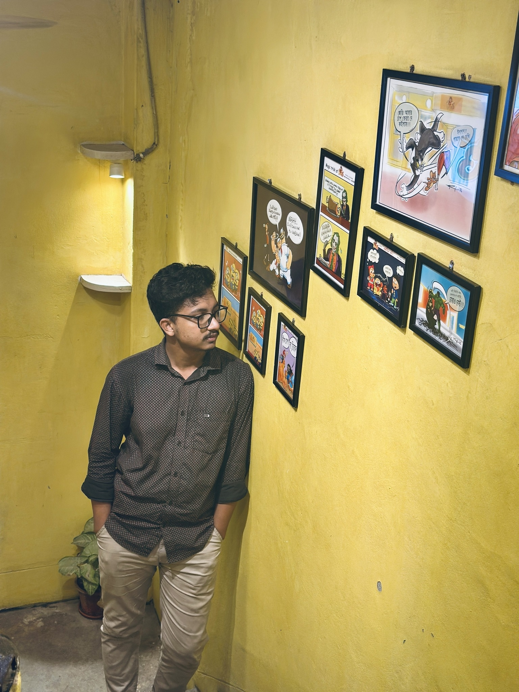

NETWORK
ENGINEER
Keeping Networks Connected.
I am Md Jahid Hasan Emon, currently working as an IT Support & NOC Engineer at a nationwide ISP. I specialize in monitoring network infrastructure, configuring Cisco & MikroTik routers, and managing OLT switches to ensure high availability. Passionate about leveraging cutting-edge networking tools to optimize and build highly efficient systems.


24/7
NETWORK MONITORING